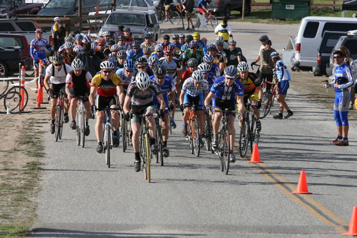
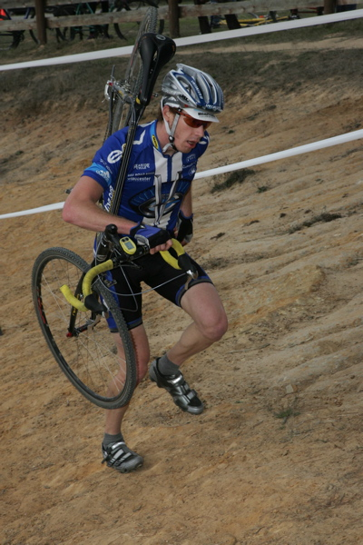
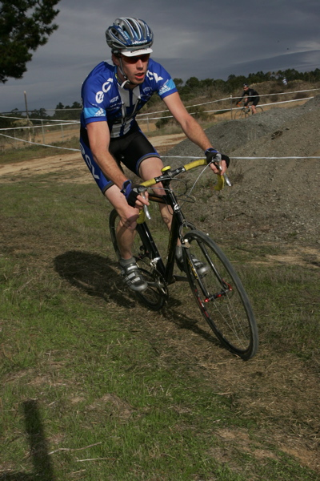

I'm too busy to write a race report this time, but here are some pics.

The start. It looks like a lot of guys, but only the first 18 are in my
category.

The run-up. What you can't see is that it begins with a two-foot-tall
step-up.
That didn't
stop Barry Wicks from riding it, though.

A rare flat stretch provides the opportunity to make up some time.